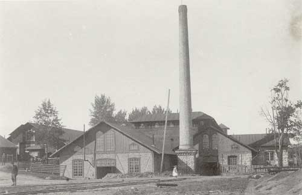

Wij valsverk
1797 - 1933

I anslutning till Wij säteri anlades 1797
ett bruk med två knipphammare
och fyra spikhammare. I smedjan bedrevs tysksmide, den vanligaste
smidesmetoden i Gästrikland. Tackjärnet hämtades från masugnen i Åbron.
Den svenska järnhanteringen expanderade mot slutet av 1800-talet, främst
beroende på att regleringen av brukens järnproduktion upphörde samtidigt
som nya järn- och stålframställningstekniker, bla valsningstekniken,
utvecklades.
År 1882-83 installerades ett mediumvalsverk, ånghammare och ångpanna i
kombination med en räckvällugn. Det kompletterades 1903 med ett finvalsverk.
Ämnena som användes i valsverket hämtades från Brattfors och Jädraås,
valsades ut i olika dimensioner och såldes till manufakturverk vid såväl
andra bruk
i Sverige som i utlandet.
Valsverket var i drift till 1933.
Wij valsverk är idag ett av de bäst bevarade och mest intakta av sitt slag i
Sverige.
Uppgifterna hämtade från Din guide, Järnriket Gästrikland, Länsmuseet
Gävleborg
Wij valsverk ägs idag av Stiftelsen Wij Valsverk